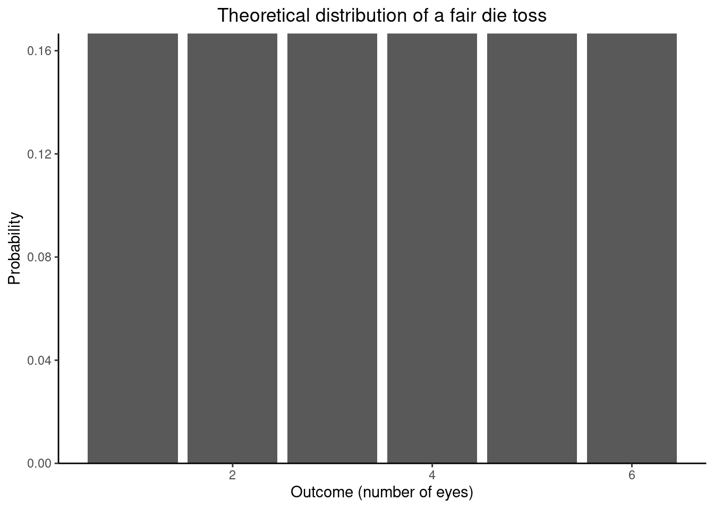

This page serves as an introduction to different concepts and terms in statistics.
Population and Sample
The population is the complete set of elements in which we are interested and on which we want to learn something. These elements can be individuals or objects. We want to learn something about the characteristics of this population, and we do this by studying the characteristics of the elements of the population.
Because it is often not possible to study every element in the population, a subset of the population is studies. This study is called a sample. The sample must be representative in order to be able to conclude something about the population from which it is drawn.
Variables and Measures
We use variables to represent the characteristics of the elements. The possible outcomes for a variable determine the type of variable we are dealing with:
quantitative: discrete or continuous
qualitative: nominal or ordinal.
The possible outcomes for a discrete random variable are countable or finite, so often the observed value for a discrete random variable is the result of counting something. A continuous random variable has an infinite number of possible outcomes, i.e., all the possible numbers within a particular range.
The possible outcomes for qualitative random variables are categories. If the categories can be ordered, then we are talking about an ordinal random variable, otherwise it is a nominal random variable.
The characteristics of a population are statistical measures, measures of center and measures of dispersion. These measures describe the distribution of a variable (characteristic in the population). A distribution shows how the values of a variable are distributed across the elements in the population. A theoretical distribution shows how the possible values for a variable should be distributed across the elements in a population (or sample), while an empirical distribution shows how the observed values for a variable are distributed across the elements in the sample (or population).
As an example, let us look at tossing a fair die. First, we must define the sample space. The sample space is the complete set of possible outcomes:
\[
S = \{ 1, 2, 3, 4, 5, 6 \}
\]
We assume that each possible outcome is equally likely to occur when the die is tossed. Therefore, the theoretical distribution can be visualized as:
dat <- tibble::tibble(x =1L:6L, p =rep(1/6, 6))ggplot(dat, aes(x = x, y = p)) +geom_col() +theme_classic() +scale_y_continuous(expand =c(0, 0)) +labs(title ="Theoretical distribution of a fair die toss") +labs(x ="Outcome (number of eyes)", y ="Probability") +theme(plot.title =element_text(hjust =0.5))

Now, let us simulate an experiment where we toss a fair die 30 times and each time note the number of eyes thrown.
The median is the value for the variable for which at least half of the observed values are less than or equal to. The median is obtained by ordering all observed values from smallest to greatest and take the middle value. If the number of observed values is even, we take the middle two values and calculate their average.
Case Study
Assume the population of interest comprises all students enrolled at a particular university. In this case, the individual elements of the population are persons (individuals). We are interested in different characteristics about this population:
the mean height
the median number of pets
the most frequently occurring hair color.
We do this by studying the characteristics for the individual students and use variables to represent these characteristics. Let the random variable \(X\) denote the height of a student in centimeters, let the random variable \(Z\) denote number of pets a student has, and let the random variable \(V\) denote the hair color of a student. The random variables \(X\), \(Z\), and \(V\) are a continuous, discrete, and nominal variables, respectively.
Let the random variable \(X\) denote the height of the students in centimeters; this is a continuous random variable, it can take on any possible numeric value in a particular range. Assume we know the height for each student in our population.
# Simulate the heights (cm) for each student in the populationset.seed(123)n <-60e3dat <- tibble::tibble(X =rnorm(n = n, mean =172, sd =5))
We can now use the observed values to visualize the empirical distribution of \(X\).
ggplot(dat, aes(x = X)) +geom_histogram(bins =50) +theme_classic() +scale_y_continuous(expand =c(0, 0)) +labs(title ="Empirical distribution of length") +labs(x ="Length (centimeters)", y ="Frequency")